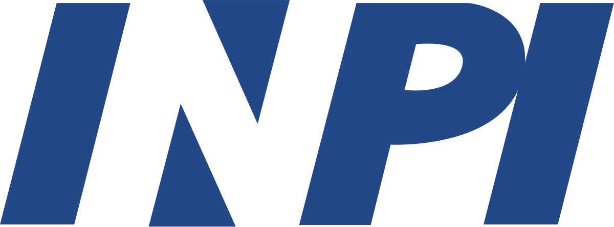
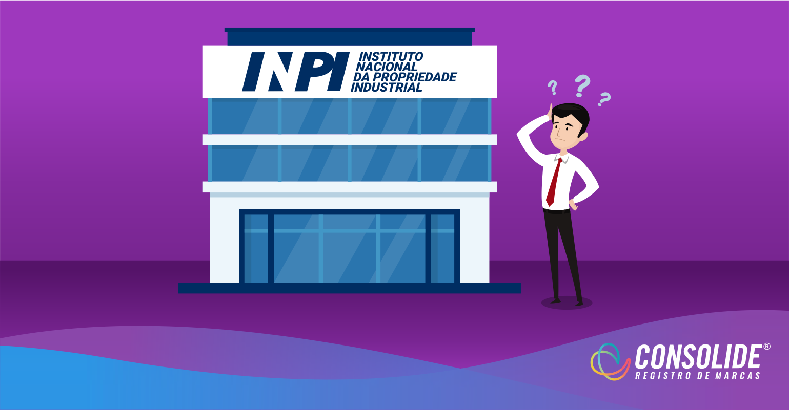

Criado em 1970, o
Instituto Nacional da Propriedade Industrial
(INPI)
é uma autarquia federal vinculada ao
Ministério da
Economia
, responsável pelo aperfeiçoamento, disseminação e
gestão do sistema brasileiro de concessão e garantia de direitos
de propriedade intelectual para a indústria.
Entre os serviços do INPI, estão os registros de marcas, desenhos
industriais, indicações geográficas, programas de computador e
topografias de circuitos, as concessões de patentes e as
averbações de contratos de franquia e das distintas modalidades
de transferência de tecnologia. Na economia do conhecimento,
estes direitos se transformam em diferenciais competitivos,
estimulando o surgimento constante de novas identidades e
soluções técnicas.
Atualmente, o INPI conta com a estrutura regimental
estabelecida pelo Decreto nº 8.854, de 22 de setembro de 2016.
Siginificado de INPI
INPI significa
Instituto Nacional da Proprieda
de Industrial.
Esse Instituto é uma autarquia federal brasil
eira vinculada ao Ministério da Economia. Fu
ndado em 1970, ele tem como finalidade prin
cipal executar, no âmbito nacional, as norma
s que regulam a Propriedade Industrial, segu
ndo a Lei 9.279/96.

Função do INPI
Os principais serviços oferecidos pelo INPI são
os registros de marcas, de desenhos industriais, de
programas de computador, de indicações geográficas e
de topografia de circuitos. O órgão também é
responsável pelas concessões de patentes,
transferência de tecnologias e averbações de contratos
de franquia.

Além disso, o INPI também tem como função fazer
pronunciamentos quanto à conveniência de
assinatura,ratificação e denúncia de convenções,
tratados, convênios e acordos sobre propriedade
industrial.
Muitas pessoas acreditam que esses processos são
indispensáveis apenas para grandes e
pequenas corporações. No entanto, segundo o próprio
Instituto, micro e pequenas empresas também devem
usar esses diferenciais, tanto para crescer em um
mercado competitivo, quanto para gerar parcerias.
Apesar de não ser obrigatório por lei, o registro de programa de computador é fundamental para comprovar a autoria de seu desenvolvimento perante o Poder Judiciário, podendo ser muito útil em casos de processos relativos a concorrência desleal, cópias não autorizadas, pirataria, etc., garantindo, assim, maior segurança jurídica ao seu detentor para proteger o seu ativo de negócio. A validade do direito é de 50 anos a partir do dia 1° de janeiro do ano subsequente à sua publicação ou, na ausência desta, da sua criação. Para maiores informações
A Lei de Direito Autoral (Lei nº 9.610/1998), e subsidiariamente a Lei de Software (Lei nº 9.609/1998), conferem proteção ao programa de computador em si, isto significa, à expressão literal do software, isto é, suas linhas de código-fonte. O registro de programa de computador no INPI é a forma de garantir sua propriedade e obter a segurança jurídica necessária de modo a proteger o seu ativo de negócio, inclusive, por exemplo, no caso de uma demanda judicial para comprovar a autoria ou titularidade do programa. Recomendamos que o programa de computador esteja suficientemente finalizado para seu pedido de registro ser depositado no INPI; assim será garantida a máxima extensão possível para a proteção do seu código-fonte. Desse modo, conforme novas versões deste mesmo software forem sendo desenvolvidas, estas também poderão ser registradas. Não há limitação para a quantidade de registros depositados sobre um mesmo software no INPI. Aqui vale uma ressalva: softwares apenas conceituais, ou seja, programas de computador que ainda se encontrem meramente no campo da ideia, não são passíveis de proteção. O registro do software no INPI é rápido, totalmente eletrônico, com a expedição do certificado em um prazo médio inferior a 7 dias.
Para fazer o pedido, é necessário:
- Pagar a GRU correspondente (código 730);
- Baixar o documento Declaração de Veracidade
- DV e assiná-lo digitalmente;
- Realizar a transformação da documentação técnica (código-fonte) em resumo digital hash;
- Preencher o formulário eletrônico e-Software.
Não, pois não existem mais as figuras da exigência e do recurso. Após protocolado o pedido de registro, apenas duas situações são possíveis: registro concedido ou petição não conhecida.
Para protocolar o pedido de registro, os únicos documentos que precisam ser anexados ao formulário eletrônico são a Declaração de Veracidade - DV, e a Procuração, se for o caso. Não é mais necessário anexar nenhum outro documento.
Para protocolar o pedido de registro, é necessária a assinatura digital do titular do direito e do procurador (quando for o caso). Sem procurador, o titular assinará o documento Declaração de Veracidade - DV com seu e-CPF (no caso de pessoa física) ou e-CNPJ (no caso de pessoa jurídica). Havendo procurador, serão necessárias as duas assinaturas digitais, uma na procuração, do titular do direito, e outra no documento DV, do procurador (obrigatoriamente usando seu e-CPF).
O resumo hash é um texto de comprimento fixo contendo letras e números, que deve ser copiado e colado no campo correspondente do formulário eletrônico, juntamente com a identificação do algoritmo empregado para a sua geração. Este resumo fará parte do Certificado de Registro.
A geração do resumo digital hash a partir da documentação técnica (código-fonte) pode se dar tanto sobre um único arquivo de entrada (PDF, DOC, TXT, etc), como sobre uma coletânea de arquivos compactados em um único arquivo ZIP ou RAR. Em qualquer um dos casos, é de vital importância que este mesmo arquivo utilizado para gerar o hash seja mantido íntegro pelo interessado, preferencialmente em mais de um meio digital de armazenamento (backup).
Protocolado o pedido de registro e consolidado o pagamento da GRU, o prazo para a expedição e disponibilização do certificado no portal do INPI é de até 10 dias corridos da data do depósito.
A guarda da documentação técnica (código-fonte) que compõe o pedido de registro não é mais de responsabilidade do INPI, mais sim do próprio interessado, isto é, o Titular do Direito. Ele será o responsável por garantir a sua perfeita integridade ao longo do tempo que for necessário.
Não. O registro permanece válido ao longo de todo o prazo de vigência, isto é, 50 anos, contados a partir de 1º de janeiro do ano subsequente ao da sua publicação ou, na ausência desta, da sua criação, sem a necessidade do pagamento de decênio.
Não. O registro de programa de computador não é territorial, isto é, sua abrangência é internacional, compreendendo os 175 países signatários da Convenção de Berna (1886).
Não se pode confundir o serviço de “Transferência de Titularidade” (cód. 704) com os de “Alteração de Nome” (cód. 731) ou “Alteração de Razão Social” (cód. 732). Os últimos são processados para o mesmo CPF ou CNPJ, respectivamente. Já o primeiro, só pode ser realizado pelo próprio Titular do Direito (cedente) ou pelo seu Procurador. O documento de cessão deverá ser assinado pelas partes e ficar sob a guarda do cessionário. Caso a transferência seja protocolada equivocadamente pelo cessionário, com GRU paga, o sistema considerará a petição não conhecida, sem direito a restituição do valor pago.
Durante os primeiros 5 meses de 2020, momento inicial da pandemia, em que as incertezas a respeito do seu impacto e duração ainda pairavam no mercado, foram concedidos uma média de 196 novos registros por mês, representando uma queda em comparação com os resultados obtidos nos últimos meses de 2019. A título de exemplo, em outubro de 2019, o INPI chegou a conceder um total de 350 novos registros.
Contudo, a partir de junho, com a percepção de que a pandemia não chegaria ao fim tão cedo e a necessidade de se adaptar à nova realidade, os números de registros voltam a crescer.
De junho a outubro foram concedidos um total de 1.411 novos registros (aproximadamente 59% de todos os registros concedidos durante o ano), sendo que em outubro o número voltou a superar a linha dos 300 registros, atingindo um total de 326 novos pedidos concedidos.
Essas são informações que podem indicar uma movimentação do mercado em explorar cada vez mais o mercado digital.
Com a entrada de um novo ano e a expectativa para o desenvolvimento e disseminação de meios de combate ao avanço da pandemia, vai ser importante analisar as estratégias adotadas pelas empresas para se estabilizar a esta nova realidade.
Naturalmente, o processo de compreensão deste cenário compreende também um acompanhamento dos novos dados a serem divulgados pelo INPI durante os próximos meses. Com tais informações talvez seja possível termos uma ideia se este é um movimento temporário do mercado ou se o comércio eletrônico de fato se consolidou perante os consumidores.